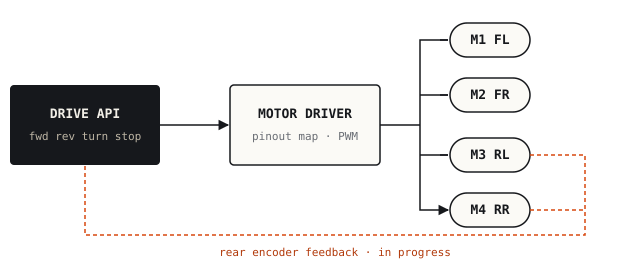

01·SYSC 4805 · Fall 2026 · team of 4
Autonomous Snowplow Robot
In progress
A four-motor robot that has to clear simulated snow from a taped arena in five minutes without hitting fixed or moving obstacles. I own the motor control layer.
What I did
- Developing the motor-driver direction and stop routines for the four-motor platform, organised around a separate pinout definition.
- Structuring the drive interface into forward, reverse, turning and stop commands so the rest of the team can test against it.
- Integrating rear-wheel encoder feedback (in progress) to support the team's state-machine controller, which combines IMU, line-following and distance sensors.

Group project in progress. Only my own contributions are described above.